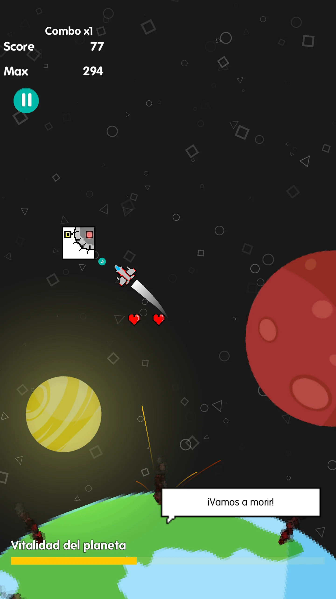
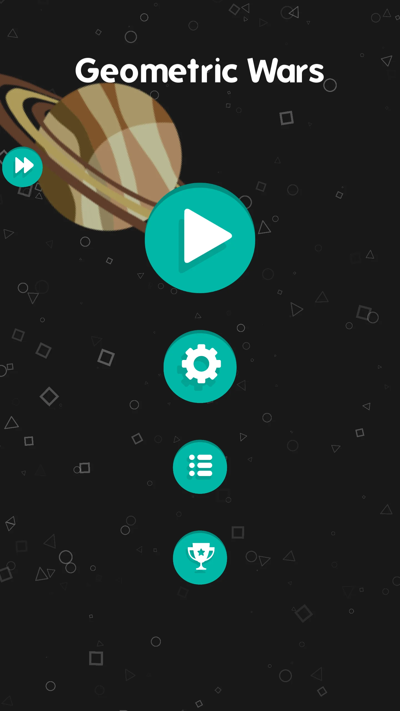
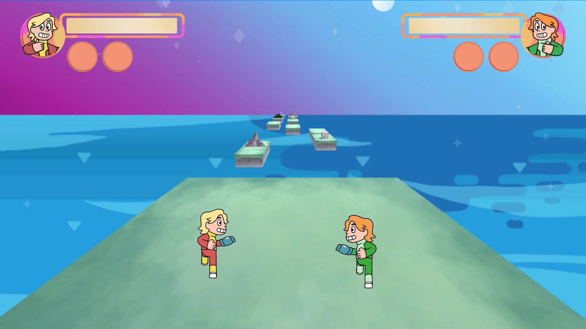
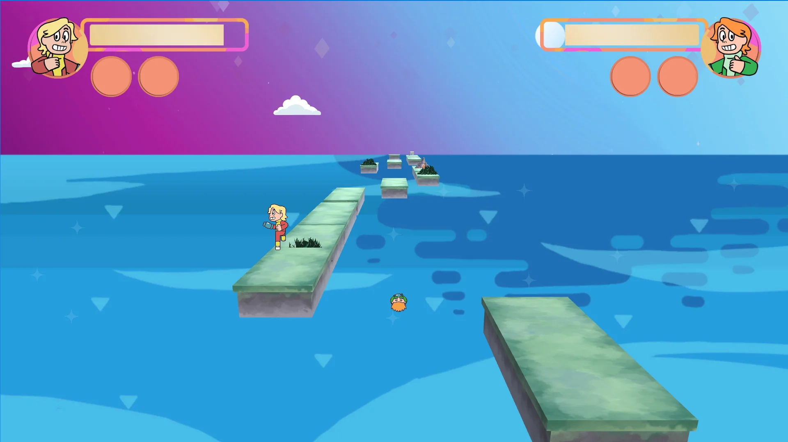
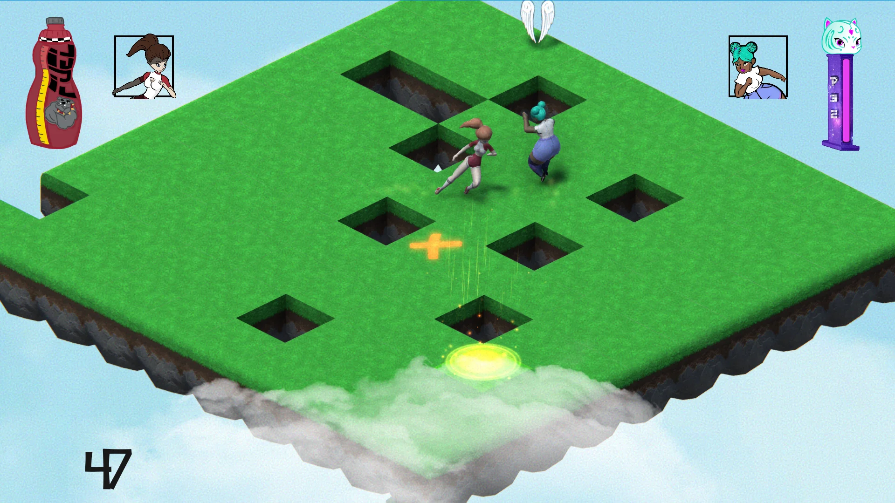
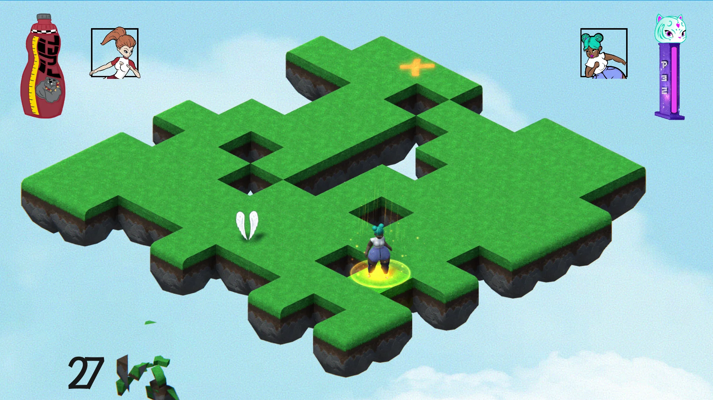
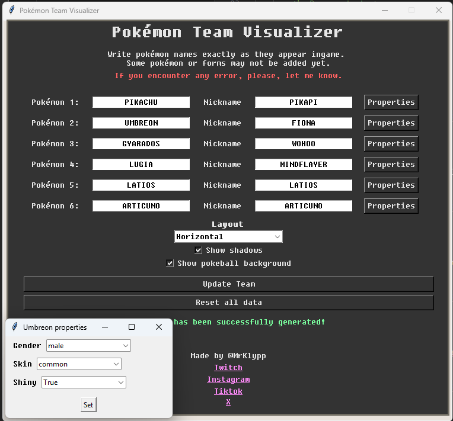

Astra
This project is an attempt to tackle the challenge of building a highly ambitious game from scratch.
It uses Zenject as our dependency injection framework. Unity Analytics has also been integrated to evaluate player behavior, helping guide future development decisions based on real gameplay data.
The damage system was carefully designed to allow detailed control over the properties of each attack, such as damage value or whether it can be countered and more. This makes combat highly customizable.
For persistence, we implemented a save system based on encrypted JSON files, making it easier for developers to add and manage saved data securely and consistently.
Bread of the Wild
In Bread of the Wild you help Bro progress in his ninja training by delivering loaves of bread to a mysterious recipient through a series of platforming levels filled with obstacles and challenges. Inspired by games such as "Celeste", "Super Meat Boy", and "I Wanna Be the Guy", this game focuses on precise controls and tight, rewarding gameplay.
Beyond the core movement mechanics, the game features a variety of interactive objects that enhance the experience. These were designed to be easily scalable, allowing rapid creation of new levels and gameplay elements.
ScriptableObjects played a key role in building the project. They were used in the audio, interaction, and level systems, contributing to a more efficient and modular architecture.
Don't Get Any Closer
GameJam project that challenges players to prevent skeletons from reaching the castle gates by quickly pressing the inputs displayed above their heads. One of the main constraints was that the match could not exceed 20 seconds, which pushed us to design a fast and engaging experience that delivers immediate tension and reward.
During the project, I also had the opportunity to mentor a junior developer. I'm proud of how much they grew during the process and of the project we managed to create.
Geometric Wars


With this project I wanted to dive into developing a game from the conception of the idea all the way to publishing it on a store.
The player controls a ship tasked with defending their planet from an attack. I focused on creating quick matches, aiming for a gameplay loop that feels tight and satisfying. I chose to publish it on Android to make it more accessible and reach a wider audience.
I'm especially proud of the enemy behavior system. It was designed in a way that allows me to easily create new enemies.
Guys That Run


Two players compete in a battle to be the last one standing. While running, they must use their blasters to disrupt the other player and claim victory.
It won the Best Game award thanks to strong teamwork, which made it possible to deliver a complete and polished experience.
High Five!


Two players must fight to be the last one standing on the platform. There are two characters available to use in order to make the other player fall off the platform. The game includes several power-ups, and players must also pay attention to their surroundings, as the environment will disappear over time.
This game was developed during a GameJam. High Five received the awards for best game and art direction. The game was developed by a team of six people
Pokemon Team Visualizer

I created this tool to solve a common problem among Pokémon streamers: displaying their team overlay in OBS. The tool was built using Python.
Manually configuring the layout in OBS was time-consuming and fragile, since any small adjustment could break the layout. With this tool I was able to make the process faster and more reliable.